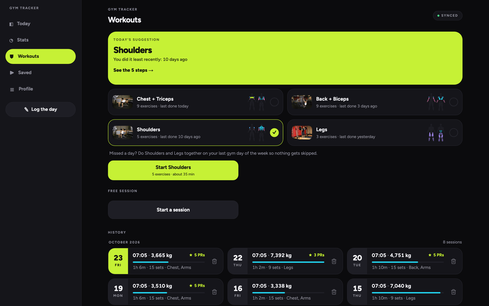

Your gym log,
even with no signal.
Gym Tracker replaces the spreadsheet. Log the day, record every set as you lift, follow a coach plan one exercise at a time and watch the charts move. It installs on an iPhone, works in the gym with no network and syncs when you are back online.
- 0 bars of signal needed in the gym
- 26 guided steps in 4 coach plans
- 1 account sees only its own rows
- 3 layouts: phone, tablet, laptop


Live demo
Walk through every screen
This is the design prototype, the visual contract the app is built against: every screen at phone size, and the big ones at laptop size. It saves nothing, so scroll freely. Things to try:
On a small phone the plates are wide. Open the demo full screen.
Features
Everything the spreadsheet could not do
Today
The home screen shows the day at a glance. Gym time is the hero number, with your streak, the day's stats and how far you are from each goal.
- Gym time from your finished sessions, or the time you type
- Steps, calories, weight and walk time against your goals
- Heart rate zones from your maximum heart rate
- Week totals: sessions, gym minutes, calories, steps
Log days
The 8 columns of the old sheet, as one form: walk time, gym time, heart rate, weight, calories and steps. Go back to any earlier day and fix it.
- Previous and next day, a date picker and heat map links
- A duration picker with presets and −15 s / +15 s, no keyboard
- A swim time and a note for the day
- A Saved toast after every save

Stats and charts
Day, Week and Month tabs. Every chart has day labels, value labels, a goal or average line, and reads well on the first day as on a full month.
- Weight with a 7-day moving average
- Volume load per session and estimated one-rep max
- Personal records, muscle group balance, gaps between sessions
- Edit mode: reorder and hide cards, saved to your profile


Live workout
Start a session and log each set as you lift. A timer runs, a rest timer counts down, and the volume adds up on screen.
- Exercise picker with search, a muscle filter and a recent list
- Set rows with reps and weight; untick with undo
- A summary with new records when you finish
- Every past session in the Workouts history

Coach plans and muscle map
4 coach plans, 26 exercises, one exercise per screen. The app suggests the plan you did least recently, and you can join 2 plans on a day you missed.
- Start and end photos, the how-to and a muscle map per step
- A tutorial link on YouTube for every exercise
- Next, Back and Skip; the step list beside the step on a laptop
- A Done screen: steps, sets, volume and new records


Saved videos
Keep the Instagram Reels and YouTube videos you find, grouped by your own categories. Tap a card and the video opens in its own app.
- A title, 1 category, tags and a priority per video
- High first, then Normal, then Low
- Filter by category, search titles and tags
- Edit and delete, with undo


CSV import
Bring the old sheet with you. The sheet mixed 15.54,
1:03:13 and 01.44.50; the importer guesses each format and
stores whole seconds.
- Every unclear row is flagged, and only those
- Fix the rows on a review screen before anything is saved
- A result screen says what was added

Offline sync
Every save lands on your phone first, so the app never waits for the network. A chip on every data screen says where your data is.
- Saves work in flight mode, in a basement gym, anywhere
- The outbox pushes when the network comes back
- A retry never makes a duplicate row
Install on iPhone
No App Store. Open the app in Safari and add it to your Home Screen. It then opens full screen, like any other app, and logs offline.
- SafariOpen the app address
- ShareTap the Share button
- ＋Add to Home Screen
How offline sync works
Your phone first. The server when it can.
The save goes to the device first. When you tap Save, the app writes the row to a database inside your browser and is done at once. No spinner, no lost set when the gym has no signal.
An outbox keeps the list. The same save also adds an entry to an outbox, in one step: never one without the other. Each row gets its own id on the device, so a retry can never make a second copy.
The sync pushes when online. The outbox drains when the app starts, the moment the network comes back, and every 30 seconds while you are online. A delete is a mark, not a removal, so it syncs too.
Each account sees only its own rows. Every table on the server has a rule: a row is visible only to the account that owns it.
-
1
SaveYou log a set. The screen updates at once.
-
2
Device databaseThe row and its outbox entry, in one step.
-
3
OutboxWaits while you are offline. Retries after a failure.
-
4
ServerStores the row under your account, and only yours.
Install
Ready in a minute
Open it, make an account, add it to your Home Screen. No download.
-
Open the app in Safari
On your iPhone, open the address in Safari. Other browsers on iPhone cannot add an app to the Home Screen.
-
Create an account
Tap Create an account: your name, email and a password of 8 or more characters. Your rows belong to this account only.
-
Tap Share
The Share button is the square with an arrow, in the Safari toolbar.
-
Add to Home Screen
Scroll the share sheet and tap Add to Home Screen, then Add.
-
Open it from the Home Screen
It opens full screen with no browser bar. Turn on flight mode and log a set: it syncs when you are back online.
On a laptop: open the same address in any current browser. At 1024 px and wider the app shows a sidebar and up to 3 columns. Your data is the same on both.